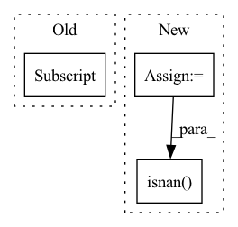

Pattern ID :17993
Before Change
// EQ 42
d_tmp = (
self.V_cubes * self.V_cubes / self.strat_counts[i] * self.JF2[i]
- (self.V_cubes / self.strat_counts[i] * self.JF[i] ) ** 2
)
self.dh[i] = d_tmp ** self.beta // dampening (EQ 43)After Change
// EQ 42
V2 = self.V_cubes * self.V_cubes
d_tmp = (
V2 * self.JF2 / self.strat_counts
- (self.V_cubes * self.JF / self.strat_counts) ** 2
)
self.dh = d_tmp ** self.beta
// for very small d_tmp d_tmp ** self.beta becomes NaN
self.dh[torch.isnan( self.dh) ] = 0
// Normalize dampening
d_sum = sum(self.dh)In pattern: SUPERPATTERN
Frequency: 5
Non-data size: 3
Instances Fragment ID: 59037061
Project Name: esa/torchquad
Commit Name: 89290b320e443f966fff26f3ebcadc3387d7baa3
Time: 2021-04-30
Author: contact@pablo-gomez.net
File Name: torchquad/integration/vegas_stratification.py
M Class Name: VEGASStratification
N Class Name: VEGASStratification
M Method Name: update_DH(1)
N Method Name: update_DH(1)
M Parent Class:
N Parent Class:
M File Name: torchquad/integration/vegas_stratification.py
N File Name: torchquad/integration/vegas_stratification.py
M Start Line: 61
M End Line: 75
N Start Line: 51
N End Line: 60
Before Change
def get_geodesic_distance(self) -> float:
curr = self.get_location()
goal = self.get_current_episode().goals[0] .position
return self.env.sim.geodesic_distance(curr, goal)
def get_distance_to_target(self) -> float:After Change
curr = self.get_location()
goals = self.get_current_episode().goals
goal = goals[self.goal_index].position
distance = self.env.sim.geodesic_distance(curr, goal)
while distance in [float("-inf"), float("inf")] or np.isnan( distance) :
self.goal_index = (self.goal_index + 1) % len(goals)
goal = goals[self.goal_index].position
distance = self.env.sim.geodesic_distance(curr, goal) Fragment ID: 59037044
Project Name: allenai/allenact
Commit Name: 1f0e1bba9171e24983f30a71f7eb018ab2bf4507
Time: 2020-03-26
Author: klemenk@allenai.org
File Name: rl_habitat/habitat_environment.py
M Class Name: HabitatEnvironment
N Class Name: HabitatEnvironment
M Method Name: get_geodesic_distance(1)
N Method Name: get_geodesic_distance(1)
M Parent Class: object
N Parent Class: object
M File Name: rl_habitat/habitat_environment.py
N File Name: rl_habitat/habitat_environment.py
M Start Line: 43
M End Line: 45
N Start Line: 44
N End Line: 54
Before Change
res = stats.linregress(x, y)
assert_(res[2] >= -1) // propagated numerical errors were not corrected
assert_almost_equal(res[2], -1) // perfect negative correlation case
assert_(not np.isnan(res[4] )) // stderr should stay finite
def test_linregress_result_attributes(self):
// Regress a line with sinusoidal noise.After Change
a, n = 1e-71, 100000
x = np.linspace(a, 2 * a, n)
y = np.linspace(2 * a, a, n)
result = stats.linregress(x, y)
// Make sure propagated numerical errors
// did not bring rvalue below -1 (or were coersced)
assert_(result.rvalue >= -1)
assert_almost_equal(result.rvalue, -1)
// slope and intercept stderror should stay numeric
assert_(not np.isnan(result.stderr))
assert_(not np.isnan( result.intercept_stderr) )
def test_linregress_result_attributes(self):
x = np.linspace(0, 100, 100) Fragment ID: 59037093
Project Name: scipy/scipy
Commit Name: 799b4fe5766eb433393e49816cbaa1e14955e64c
Time: 2020-11-09
Author: marcin.konow@lczyk.xyz
File Name: scipy/stats/tests/test_stats.py
M Class Name: TestRegression
N Class Name: TestRegression
M Method Name: test_regress_simple_negative_cor(1)
N Method Name: test_regress_simple_negative_cor(1)
M Parent Class: object
N Parent Class: object
M File Name: scipy/stats/tests/test_stats.py
N File Name: scipy/stats/tests/test_stats.py
M Start Line: 1421
M End Line: 1427
N Start Line: 1443
N End Line: 1454
Before Change
for i in range(predictions.shape[0]):
// sum_x = torch.sum(predictions[i]-torch.mean(predictions[i]))
// sum_y = torch.sum(targets[i]-torch.mean(targets[i]))
sum_xy = torch.sum((predictions[i] -torch.mean(predictions[i])) * (targets[i]-torch.mean(targets[i])))
pow_x = torch.sum(torch.pow(predictions[i]-torch.mean(predictions[i]), 2))
pow_y = torch.sum(torch.pow(targets[i]-torch.mean(targets[i]), 2))
pearson = (sum_xy / torch.sqrt(pow_x * pow_y) + eps).float()After Change
for i in range(predictions.shape[0]):
// predictions[i] = (predictions[i] - torch.mean(predictions[i])) / torch.std(predictions[i])
// targets[i] = (targets[i] - torch.mean(targets[i])) / torch.std(targets[i])
sum_x = torch.sum(predictions[i]) // x
sum_y = torch.sum(targets[i]) // y
sum_xy = torch.sum(torch.mul(predictions[i], targets[i])) // xy
sum_x2 = torch.sum(torch.pow(predictions[i], 2)) // x^2
sum_y2 = torch.sum(torch.pow(targets[i], 2)) // y^2
N = predictions.shape[1]
pearson = (N * sum_xy - sum_x * sum_y) / (
torch.sqrt((N * sum_x2 - torch.pow(sum_x, 2)) * (N * sum_y2 - torch.pow(sum_y, 2)))) + eps
if torch.isnan( pearson) :
print("pearson is nan")
print("N :", N, "sum_xy :", sum_xy, "sum_x :", sum_x, "sum_y :", sum_y, "sum_x2 :", sum_x2, "sum_y2 :", sum_y2)
pearson = 0 Fragment ID: 59037062
Project Name: tvs-ai/pytorch_rppgs
Commit Name: 79fa5ea2fc22ff76197fc5272382574b54608880
Time: 2023-01-02
Author: forownsake@gmail.com
File Name: vid2bp/nets/loss/loss.py
M Class Name: AnonimousClass
N Class Name: AnonimousClass
M Method Name: Neg_Pearson_Loss(2)
N Method Name: Neg_Pearson_Loss(2)
M Parent Class:
N Parent Class:
M File Name: vid2bp/nets/loss/loss.py
N File Name: vid2bp/nets/loss/loss.py
M Start Line: 114
M End Line: 173
N Start Line: 114
N End Line: 191
Before Change
targets = np.empty_like(time)
else:
series = df.loc[:, "y_scaled"].values
targets = [series[i + n_lags: i + n_lags + n_forecasts] for i in range(n_samples)]
targets = np.array(targets)
if verbose:After Change
covariates = OrderedDict({})
for covar in covar_config:
if covar in df.columns:
covariates[covar] = _stride_lagged_features(df_col_name=covar)
if np.isnan( covariates[covar]) .any(): raise ValueError("Input lags contain NaN values in ", covar)
inputs["covariates"] = covariates
if predict_mode: Fragment ID: 59037084
Project Name: ourownstory/neural_prophet
Commit Name: ae0ba720f438f8a50ffd5e397e3cde56a91a157b
Time: 2020-06-22
Author: oskar.triebe@merantix.com
File Name: neuralprophet/time_dataset.py
M Class Name: AnonimousClass
N Class Name: AnonimousClass
M Method Name: tabularize_univariate_datetime(7)
N Method Name: tabularize_univariate_datetime(6)
M Parent Class:
N Parent Class:
M File Name: neuralprophet/time_dataset.py
N File Name: neuralprophet/time_dataset.py
M Start Line: 116
M End Line: 163
N Start Line: 93
N End Line: 177